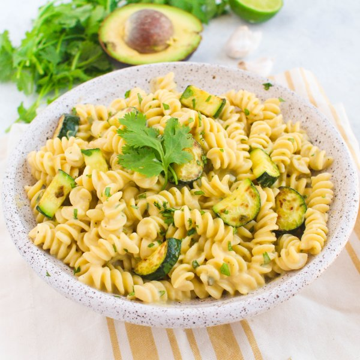

Zesty Avocado Mac 'n' Cheese with Zucchini & Jalapeño

Nutrition (per serving)
729.7 kcalCalories
24.9 gProtein
83.6 gCarbs
33.9 gFat
Full nutrition table
| Calories | 729.7 kcal |
| Total fat | 33.9 g |
| Saturated fat | 16.3 g |
| Trans fat | 0.9 g |
| Cholesterol | 70.6 mg |
| Sodium | 258.2 mg |
| Carbohydrates | 83.6 g |
| Fiber | 8.1 g |
| Sugars | 11.2 g |
| Protein | 24.9 g |
| Potassium | 1002.2 mg |
| Calcium | 376.1 mg |
| Iron | 4.2 mg |
| Vitamin A | 732.5 IU |
| Vitamin C | 40 mg |
| Vitamin D | 69.9 IU |
Cookware
Ingredients
- 1avocado
- ½ (8 oz) blockcheddar cheese
- 1 small bunchcilantro
- 2 clovesgarlic
- 2jalapeño peppers
- 1lime
- 12 ozrotini pasta
- 14 fl ozwhole milk
- 2 mediumzucchini squash
- all-purpose flour
- black pepper
- butter, unsalted
- salt
Steps
- Fill a large pot halfway with water, cover, and bring to a boil. Uncover, add salt and pasta, and stir for a few seconds. Cook until desired firmness, 8-10 minutes.12 oz rotini pasta
2 tsp salt - Coarsely grate the cheddar cheese and set aside.½ (8 oz) block cheddar cheese
- Wash and dry the fresh produce.2 medium zucchini squash
2 jalapeño peppers
1 small bunch cilantro
1 avocado
1 lime - Juice the lime into a medium bowl. Peel and mince or press the garlic into the same bowl.2 cloves garlic
- Halve the avocado and remove pit; scoop out the flesh into the medium bowl. Mash with a fork, mixing it into the lime juice and garlic.
- Slice the zucchini into ½-inch half moons and set aside.
- Quarter the jalapeño peppers lengthwise; seed and remove ribs of the jalapeño with a spoon. Finely dice and set aside. (Be careful, with jalapeños, do not touch your eyes and ensure you wash your hands after handling or wear gloves while preparing).
- Heat a large non-stick skillet over medium heat and add butter, swirling to coat the bottom.2 tbsp butter, unsalted
- Add the zucchini and jalapeños to the skillet. Cook, stirring occasionally, until the zucchini begins to brown; 4-5 minutes. Pour contents of skillet into a medium bowl and set aside.
- Return the skillet to medium-low heat and add butter. Once melted, whisk in the flour and cook for 2 minutes.2 tbsp butter, unsalted
3 tbsp all-purpose flour - Whisk in the milk and cook, stirring constantly, until smooth and thick, about 3-4 minutes. Season with salt and pepper.14 fl oz (1 ¾ cups) whole milk
½ tsp salt
¼ tsp black pepper - Add the grated cheese to the skillet and stir until melted. Remove skillet from heat.
- Shave the cilantro leaves off the stems; discard the stems and mince the leaves. Set aside.
- Add the avocado mixture to the skillet and stir until combined. Fold in the cooked pasta, veggie mixture, and cilantro.
- Divide between plates, serve immediately, and enjoy!